조경기사 (2010-05-09 기출문제)
1과목: 조경사
1. 일본의 침전조(寢殿造) 정원에 대한 설명으로 틀린 것은?
- 부지의 앞쪽에 침저닝 위치하고 후원에는 조전(釣殿)이 있다.
- 침전 전면의 뜰은 남정(南庭)이라 하여 흰 모래를 깔고 연중행사 또는 의식의 공간으로 이용하였다.
- 대표적인 정원으로 동삼조전(東三條殿)이 있다.
- 주경은 연못이며, 면적이 커지면 대해의 형태로 바다의 경관이 연출되었다.
(정답률: 55%)

2. 조선 태조 3년에 국사단과 국직단을 축조하였으며, 이를 합쳐 사직단이라 한다. 다음 설명 중 틀린 것은?
- 동양의 우주관에 의해 궁궐 왼쪽에 사직단을 두었다.
- 토신에 제사지내는 사단(社壇)을 사직단에서 동쪽에 두었다.
- 곡식의 신에 제사지내는 직단(稷檀)을 사직단에서 서쪽에 두었다.
- 두 사직의 외각 기단부 사방에 홍살문을 두었다.
(정답률: 68%)
3. 고대 이집트에서 나일강을 중심으로 예배신전과 장제신전(분묘)은 어디에 설치하였는가?
- 예배신전은 동쪽, 장제신전은 서쪽에 입지
- 예배신전은 서쪽, 장제신전은 동쪽에 입지
- 예배신전과 장제신전 둘 다 동쪽에 입지
- 예배신전과 장제신전은 나일강 방향에 나란하게 입지
(정답률: 74%)
4. Frederick Law Olmsted의 '공원관'에 강한 영향을 미친 19세기 영국의 공원은?
- Pince's Park
- Victoria Park
- Hyde Park
- Birkenhead Park
(정답률: 83%)
5. 중국의 정원을 연구하는데 있어 중요한 문헌별 저자명이 옳지 않은 것은?
- 낙양명원기(洛陽名園記) - 이격비(李格非)
- 양주화방록(楊州畵舫錄) - 이두(李斗)
- 원야(園冶) - 문진형(文震亨)
- 유금능제원기(遊金陵諸園記) - 왕세정(王世貞)
(정답률: 78%)
6. 조선시대 궁궐의 지당 가운데 창덕궁 내에 위치한 우리나라 전통적 지당 형식인 방지원도인 연못은?
- 부용지
- 경회루지
- 반도지
- 춘당지
(정답률: 68%)
7. 「...이 정원의 경치, 훌량한 시설들과 아름다운 화초와 분수, 그리고 거기서 흘러나오는 많은 물은 신사 숙녀들을 만족시켰으며 만일 이 지상에 낙원이 있었다면 그 낙원은 바로 이 정원일것이다...」라고 기록된 빌라 팔리미에리(Villa Parlimier)는 누구와 관련있는가?
- 알베르티
- 단테
- 페르라르카
- 보카치오
(정답률: 45%)
8. 당나라시대 유명한 민간정원인 평천산장(平泉山莊)과 관계없는 것은?
- 산장 정원안에 괴석을 쌓아 무산 12봉(巫山十二峰)을 상징하였다.
- 정원 안에 천하에 귀한 화초를 식재하였다.
- 정원 안에 기석(奇石), 괴석(怪石)을 배치하였다.
- 이 정원은 당대의 거부 사마광의 산장이었다.
(정답률: 57%)
9. 다음 중 중국의 대표적 정원에 해당하지 않는 것은?
- 서호(西湖)
- 이화원(理和園)
- 북해공원
- 육의원(六義園)
(정답률: 73%)
10. 삼신선도(三神仙島)식 신선사상에 입각하여 조성된 일본정원은?
- 묘심사 정원
- 금각사 정원
- 모월사 정원
- 천룡사 정원
(정답률: 46%)
11. 바로크(Baroque)식 정원의 특징 설명으로 볼 수 없는 것은?
- 16세기말부터 17세기에 걸쳐 이태리 정원에서 나타났다.
- 최초의 바로크 취미는 정원동굴(grotto)이라 할 수 있다.
- 물을 기교적으로 다양하게 처리하여 즐기려는 풍이 있었다.
- 토피아리의 기법을 버리고 자연수목의 형태에서 낭만을 즐겼다.
(정답률: 71%)
12. 주택의 공간구성을 조감도식으로 그린 오미동가도(五美洞家圖)가 있어 정원형을 유추하기 용이한 곳은?
- 무안 화설당
- 진주 용호정
- 구레 운조루
- 영양 서식지
(정답률: 77%)
13. 고구려 안학궁의 특징이 아닌 것은?
- 한 변이 약 622m에 이르는 방형이다.
- 남북 중심축선상에 운, 정전, 침전이 차례로 놓여있다.
- 침전 뒤 가장 뒤쪽에 가산이 있으며 이곳에 연못이 있다.
- 왕궁의 동남쪽에 한 변이 70m인 정방형의 못자리가 있다.
(정답률: 64%)
14. 일본의 조경문화 발달에 기여한 백제사람 노자공에 관련된 다음의 사항 중 옳은 것은?
- 고사기라는 문헌에 실려 있다.
- 추고천황 29년(서기 621년)의 기록이다.
- 노자공은 '지기마려'라고도 불렸다.
- 남쪽마당에 오교와 무산십이봉을 만들었다.
(정답률: 67%)
15. 프랑스식 동경 정원(vista garden) 개념이 영국에 옮겨진 좋은 사례는?
- Trentham Hall
- Stourhead
- Isola Bella
- Hampton Court
(정답률: 66%)
16. 다음 중 작정기(作定記)에 대한 설명 중 잘못된 것은?
- 일본에서 정원 축조에 관한 가장 오래된 비전서이다.
- 헤이안 시대 등원뢰통의 아들 귤준망이 엮은 것으로 알려졌다.
- 회유식 정원 형태의 의장에 관한 것으로 시공에 대해 상세히 기록하고 있다.
- 정원을 꾸미는데 자연을 존중하고 자연에 순응하는 깊은 관찰을 강조하였다.
(정답률: 67%)
17. 고대 이집트 정원 연못가에 세워졌던 원정(園亭)의 명칭은?
- Kiosk
- Shrine garden
- Quitsu
- Kiru
(정답률: 82%)
18. E.A. Gudkind가 인간과 자연의 관계를 분류한 내용으로 틀린 것은?
- 원시시대 - 외경의 관계[I-Thou]
- 고대시대 - 적응의 관계[self-confidence]
- 산업시대 - 정복의 관계[I-It]
- 21세기 - 이용의 관계[exploitation]
(정답률: 69%)
19. 무어풍(Moorish)의 조경양식이 탄생하는데 가장 큰 영향을 미친 종교적 배경은?
- 기독교
- 이슬람교
- 불교
- 힌두교
(정답률: 81%)
20. 르네상스 말기 로마의 별장정원은 명쾌한 균제미로부터 복잡한 곡선을 장식한 건축양식의 뒤를 따라 정원도 이러한 양식으로 전환되었다. 그 양식은?
- 로코코식
- 바로크식
- 절충식
- 자연풍경식
(정답률: 80%)
2과목: 조경계획
21. 다음의 공원 및 녹지체계 구성 방식 중 녹지의 연결성과 접근성의 측면에서 바람직하다고 볼 수 있으나, 한정된 녹지가 넓은 면적에 분포하게 되어 녹지의 폭이 좁아지는 단점이 있는 것은?
- 단지내 녹지를 한곳으로 모으는 집중형
- 단지내 녹지를 고르게 분포시키는 분산형
- 대상형을 가로, 세로로 겹쳐 놓은 격자형
- 일정 폭의 녹지를 길게 조성하는 대상형
(정답률: 62%)
22. 조경가의 작품과 순수예술가의 작품 사이에 관계성 설명으로 맞는 것은?
- 공간구성의 기본원리가 상이하다.
- 조경가는 합리적 접근만을 하며, 예술가는 창조적 접근만을 도모한다.
- 조경가는 이용자의 가치를, 예술가는 자신의 가치를 주로 반영시킨다.
- 조경가는 시간적(時間的)인자를 고려하나 예술가는 그렇지 않다.
(정답률: 67%)
23. 다음 주거형태들 중 연립주택의 장점에 대한 설명으로 맞는 것은?
- 자동차의 접근과 직접적으로 연결될 필요가 없으므로 다양한 형태의 주거군 형성이 용이하고 공동설비로 공사비가 절감된다.
- 적절한 일조, 통풍, 유의 및 주차장과 기타의 옥외활동을 위한 충분한 공간 확보가 가능하다.
- 가로와 전용 뜰에 직접출입이 가능하고, 소음과 시각적 프라이버시가 보장된다.
- 고도의 토지이용과 건축비 절감효과가 가능하다.
(정답률: 46%)
24. 사람들이 관광의 행위를 일으키는 데는 여러가지 요인이 작용한다. 관광을 발생시키는 외적요인에 해당하지 않는 것은?
- 욕구
- 여가시간
- 소득
- 생활환경
(정답률: 77%)
25. 도시계획시설의 결정, 구조 및 설치기준에 관한 규칙상 광장의 구조 및 설치기준에 관한 설명으로 틀린 것은?
- 교차점광장에는 횡단보도행자의 통행에 지장이 없는 시설을 설치하고, 「도로법」의 규정에 의한 도로부속물을 설치할 수 없도록 할 것
- 역전광장에는 이용자를 위한 보도, 차도, 택시정류장, 버스정류장, 휴식시설 등을 설치할 것
- 중심대광장에는 주민의 집회, 행사 또는 휴식을 위한 시설과 보행자의 통행에 지장이 없는 시설을 설치할 것
- 지하광장은 통풍 및 환기가 원활하도록 할 것
(정답률: 67%)
26. 건축, 토목, 도시계획 등 건설활동과 조경과의 관련성을 설명한 것 중 틀린 것은?
- 구조물의 안정성을 최우선으로 고려하여 구조물 자체에 녹화계획은 금하고 있다.
- 일반적으로 사면이 형성되는 토목계획의 수립시 시각적 안정감 및 구조안정성을 향상시키고자 식재를 권장하고 있다.
- 도시내 경관은 자연을 기본골격으로 시간의 흐름에 따라 변화됨에 따라 각 건설활동에 합리적 분석이 요구된다.
- 도시내 건축물들의 무분별한 개발계획을 막고자, 경과 고도규제 및 양호한 스카이라인 형성을 고려한 계획이 요구된다.
(정답률: 75%)
27. 기본계획의 부문별 계획에 포함되지 않는 것은?
- 토지이용계획
- 동선계획
- 시설물배치계획
- 세부설계 및 시공설계
(정답률: 74%)
28. 주택건설기준 등에 관한 규정에서 공동주택을 건설하는 주택단지에는 그 단지면적의 얼마에 해당하는 면적의 녹지를 확보하여 공해방지 또는 조경을 위한 식재 기타 필요한 조치를 하여야 하는가? (단, 공동주택의 1층에 주민의 공동시설로 사용하는 피로티를 설치하는 경우를 제외한다.)(관련 규정 개정전 문제로 여기서는 기존 정답인 4번을 누르면 정답 처리됩니다. 자세한 내용은 해설을 참고하세요.)
- 1백분의 5
- 1백분의 10
- 1백분의 20
- 1백분의 30
(정답률: 74%)
29. 포괄적 의미에서 “계획(planning)”의 일반적인 과정을 4단계로 구분할 때 적절치 못한 것은?
- 1단계 : 목표와 목적의 설정
- 2단계 : 기준 및 방침의 모색
- 3단계 : 대안작성 및 평가
- 4단계 : 환류
(정답률: 56%)
30. 도로의 직선부와 곡선부 사이에 설치하는 구간으로 곡률반경을 점차적으로 변화시켜 직선 부분의 도로와 곡선부분의 도로가 무리 없이 연계 되도록 설계하는 구간의 크기를 가리키는 것은?
- 종단구배
- 횡단구배
- 최소곡선장
- 완화구간장
(정답률: 47%)
31. 주택단지의 밀도 산정과 관련된 내용 중 틀린 것은?
- 순밀도(net density)는 주택지대 순대지의 단위면적에 대한 밀도를 말한다.
- 용적률을 일정 구역에 있어서 건축연면적 합계의 부지면적 합계에 대한 비율을 말한다.
- 거주밀도는 단위면적당 그곳에 거주하는 인구수의 평균을 의미한다.
- 용적률은 평면적인 토지이용상태로 본 주택단지의 구성지표이다.
(정답률: 61%)
32. 국토의 계획 및 이용에 관한 법률에서 지정하는 용도지구에 해당되지 않는 것은?
- 보존지구
- 미관지구
- 경관지구
- 특정용도지구
(정답률: 43%)
33. 영역성(territoriality)과 가장 관계 깊은 학자는?
- 리톤(Litton)
- 린치(Lynch)
- 알트만(Altman)
- 라포포트(Rapoport)
(정답률: 57%)
34. 조경가(Landscape Architect)라는 용어를 실무에서 처음으로 사용한 사람은?
- 길버트 미션(Gilbert Meason)
- 프레데릭 로 옴스테드(Frederick Law Olmsted)
- 험프리 렙튼(Humphrey Repton)
- 앙드레 르 노르트(Andre Le Notre)
(정답률: 72%)
35. 환경영향평가에 대한 설명으로 틀린 것은?
- 환경영향평가대상사업에 대한 충분한 정보제공 등을 통하여 환경영향평가 과정에 주민 등의 참여가 원활히 이루어질 수 있도록 노력한다.
- 개발로 인한 환경적 영향을 사전에 평가, 검토한다.
- 우리나라는 자연공원법이 이에 관련된 주 법규이다.
- 환경영향평가서의 작성내용, 작성방법 등 평가서 작성에 필요한 사항은 대통령령으로 정한다.
(정답률: 50%)
36. 자연공원법상 집단시설지구를 세분화할 때 해당되지 않는 것은?(관련 규정 개정전 문제로 여기서는 기존 정답인 4번을 누르면 정답 처리됩니다. 자세한 내용은 해설을 참고하세요.)
- 녹지
- 유보지
- 숙박시설지
- 취락지
(정답률: 70%)
37. 어느 공원의 이용객수가 년 100000명, 최대 일율이 0.03일 때 피크닉 공간의 소요 면적(m2)은? (단, 피크닉 공간 이용율 : 0.6, 회전율 : 1/2, 1인당 소요면적 : 15m2)
- 27000
- 21500
- 13500
- 11200
(정답률: 59%)
38. 세계 최초로 지정된 국립공원과 한국 최초로 지정된 국립 공원이 바르게 짝지어진 것은?
- 옐로우스톤(yellow stone) - 지리산
- 요세미티(yosemite) - 오대산
- 옐로우스톤(yellow stone) - 설악산
- 요세미티(yosemite) - 속리산
(정답률: 76%)
39. 생태적 결정론(ecological determinism)을 주장하여 조경계획 및 설계에 있어 생태적 계획의 이론적 기초가 되도록 한 사람은?
- Lawrece Halprin
- lan McHarg
- J.O.Simonds
- Robert Sommer
(정답률: 72%)
40. 아파트 단지 내 조경설계의 주요 고려사항 중 일조, 통풍, 차광, 조망권 확보 등에 가장 밀접한 관계를 지닌 것은?
- 건축바닥 면적과 형태
- 아파트 지구 내 동선의 폭
- 아파트 총 거주자 수
- 아파트의 인동간격
(정답률: 71%)
3과목: 조경설계
41. 점, 선, 면 또는 색채 등이 두 개 이상 배치되면 그들은 서로 긴장성(緊張性)을 가지고 관련을 갖게 된다. 이러한 현상을 무엇이라 하는가?
- 균형
- 스파늉
- 균제
- 지각
(정답률: 61%)
42. 다음 빈칸에 들어갈 용어를 순서대로 연결된 것은?
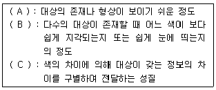
- A : 식별성, B : 유목성, C : 시인성
- A : 유목성, B : 가독성, C : 식별성
- A : 정서성, B : 상징성, C : 시인성
- A : 시인성, B : 유목성, C : 식별성
(정답률: 61%)
43. Gordon Cullen이 도시경관 분석시 이용했던 분석개념에 해당되지 않은 것은?
- 장소(Place)
- 연속적 경관(Serial Vision)
- 동일성(Identity)
- 내용(Content)
(정답률: 47%)
44. 해가 지고 주위가 어둑어둑 해질 무렵 낮에 화사하게 보이던 빨간 꽃은 거무스름해져 어둡게 보이고, 그 대신 연한 파랑이나 초록의 물체들이 밝게 보이는 현상을 무엇이라고 하는가?
- 베졸드 브뤼케 현상
- 하만그리드 현상
- 애브니 효과 현상
- 푸르킨예 현상
(정답률: 69%)
45. 우리들이 눈으로 보는 것과 같이 먼 곳에 있는 것은 작게, 가까이 있는 것은 크고 깊이가 있게 하나의 화면에 그리는 도법으로 이를 원근 화법이라고 하는 것은?
- 명암법
- 구도법
- 투시법
- 점묘법
(정답률: 53%)
46. 대표적인 아방가르드 작가로 과감한 실험 정신의 대표작가이며, 움직임의 기록과 표현을 위한 코리오그라피(Choreography), 모테이션 심벌(Motation Symbol) 등의 독자적인 표기법을 개발한 이는 누구인가?
- 단 카일리(Kiley. D)
- 로렌스 핼프리(Halprin. L)
- 로베트로 벌막스(Burle Marx. R)
- 루이스 바라간(Barragan. L)
(정답률: 61%)
47. 다음 중 도면 제작시 가는 실선을 사용해야 하는 경우가 아닌 것은?
- 기준선
- 치수보조선
- 인출선
- 해칭선
(정답률: 50%)
48. 다음 중 색입체에 관한 설명으로 틀린 것은?
- 색입체의 중심축은 무채색 축이다.
- 오스트발트 표색계의 색입체는 타원과 같은 형태이다.
- 색의 3속성을 3차원 공간에다 계통적으로 배열한 것이다.
- 먼셀표색계의 색입체는 나무의 형태를 닮아 color tree라고 한다.
(정답률: 51%)
49. 축척 1/100의 도면을 축척 1/300의 도면으로 만들고자 한다. 축척 1/100에서 크기 A를 갖는 도형은 축척 1/300에서 그 크기가 얼마나 되는가?
- 3A
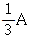
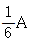
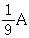
(정답률: 52%)
50. 투상도의 종류 중 X, Y, Z의 기본 축이 120° 씩 화면으로 나누어 표시되는 것은?
- 이등각 투상도
- 부등각 투상도
- 유각 투시도
- 등각 투상도
(정답률: 67%)
51. 경관속에서 자연의 힘으로서 이루어진 독특한 심미적 조직의 양태(樣態 : mode)를 발견하게 되는데 이것을 무엇이라 하는가?
- 경관의 요소
- 경관의 구성
- 경관의 양식
- 경관의 성격
(정답률: 38%)
52. 다음 입체도의 정면도(화살표 방향)로 적합한 것은?
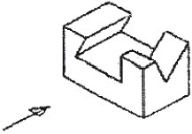
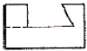
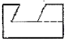
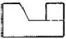
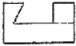
(정답률: 67%)
53. 벤치의 배치 계획시 sociopetal 형태로 했다면 인간의 심리적 요소 중 어느 욕구에 해당하는가?
- 사회적 접촉에 대한 욕구
- 안정에 대한 욕구
- 프라이버시에 대한 욕구
- 장식에 대한 욕구
(정답률: 58%)
54. 다음 중 조경에 사용되는 단위놀이시설의 설계기준으로 부적합한 것은?
- 모래막이의 마감면은 모래면보다 5cm 이상 높게 하고 폭은 12~20cm를 표준으로 하며, 모래밭 쪽의 모서리는 둥글게 마감한다.
- 사다리 등 기어오르는 기구는 기울기를 30~45도를 기준으로 하고, 너비는 30~45cm를 기준으로 한다.
- 미끄럼판의 높이가 1.2m 이상인 경우에는 미끄러판과 상계판 사이의 균형유지를 위한 안전손잡이를 설치하되 높이 15cm를 기준으로 한다.
- 그네의 안장과 모래밭과의 높이는 35~45cm 가 되도록 하며, 이용자의 나이를 고려하여 결정한다.
(정답률: 54%)
55. 디자인에 있어서 시각적 흥미로 유발하는 초점으로서 강조(Emphasis)의 조건으로 적합하지 않은 것은?
- 대비(Contrast)
- 분리(Isolation)
- 배치(Placement)
- 반복(Repetition)
(정답률: 59%)
56. 제도에 사용하는 문자에 대한 설명으로 옳은 것은?
- 제도 동칙에서는 규정하지 않는다.
- 문자의 높이로 크기를 나타낸다.
- 축척에 따라 반드시 같은 크기로 한다.
- 일반 치수문자는 9~18mm를 사용한다.
(정답률: 48%)
57. 다음 경관(landscape)과 장소(place)에 대한 설명 중 틀린 것은?
- 장소는 행위를 함축하므로 경관에 비하여 더욱 경험적 의미를 내포하고 있다.
- 장소는 행동의 중심이고, 경관은 이의 배경으로 볼 수 있다.
- 경관은 '바라본다'라는 의미가 함축되는 반면, 장소는 '안에 있다'라는 의미가 함축된다.
- 장소는 물리적 구성의 성격이 강하며, 넓은 공간적 범위를 함축하고 있다.
(정답률: 63%)
58. 다음 재료별 도면표시방법 중 표현이 잘못된 것은?
- 잡석 :

- 콘크리트 :

- 석재 :

- 벽돌 :

(정답률: 59%)
59. 한국의 전통색 중 동쪽, 봄을 의미하는 오정색은?
- 청색
- 적색
- 백색
- 황색
(정답률: 63%)
60. 보행등의 배치 및 시설기준으로 부적합한 것은?
- 보행인이 이용에 불편함이 없는 밝기를 확보하며, 보행로의 경우 3lx 이상의 밝기를 적용한다.
- 소로, 산책로, 계단, 구석진 길, 출입구, 장식벽 등에 설치한다.
- 배치간격은 설치높이의 8배 이하 거리로 하되, 등주의 높이와 연출할 공간의 분위기를 고려한다.
- 보행등 1회로는 보행등 10개 이하로 구성하고, 보행등의 공용접지는 5개 이하로 한다.
(정답률: 36%)
4과목: 조경식재
61. “Cornus alba L.”의 설명으로 틀린 것은?
- 층층나무과로 낙엽활엽관목이다.
- 수피가 여름에는 녹색이나 가을, 겨울철의 붉은 줄기가 아름답다.
- 노란색의 열매가 특징적이다.
- 잎은 대생하며 타원형 또는 난상타원형이고, 표면에 작은 털, 뒷면은 흰색의 특징을 갖는다.
(정답률: 54%)
62. 다음 중 꽃의 색이 노란색인 것은?
- Cercis chinensis Bunge
- Lindera obtusiloba Blume
- Rhododendron mucronulatum Turcz
- Amelanchier asiatica Endlicher
(정답률: 50%)
63. 부등변삼각형 식재가 해당되는 식재 유형은?
- 정형식재재
- 자연풍경식식재
- 자유식재
- 군락식재
(정답률: 63%)
64. 붉은색으로 단풍이 아름답게 드는 수종은?
- Rhus chinensis Mill
- Acer mono M.
- Liriodendron tulipifera L.
- Aesculus turbinata B.
(정답률: 46%)
65. 조경식물의 이용상 분류로써 맞지 않는 것은?
- 심근성 수종
- 녹음용 수종
- 방풍용 수종
- 방화용 수종
(정답률: 75%)
66. 다음 화서(花序, 꽃차례) 중 무한화서에 속하지 않는 것은?
- 취산화서
- 총상화서
- 산방화서
- 수상화서
(정답률: 32%)
67. 조경지의 토양을 개선하기 위해서 사용되는 부식(humus)의 특성에 대한 기술 중 잘못된 것은?
- 부식은 미생물의 활동을 활발하게 하며 유기물의 분해를 촉진시킨다.
- 부식은 토양의 용수량을 증대시키고 한발을 경감시킨다.
- 부식은 보비력이 강하고 배수력과 보수력이 강하다.
- 부식은 토양의 단립(團粒)구조를 만들고 토양의 물리적 성질을 약화시킨다.
(정답률: 60%)
68. 지피식재의 기능과 효과로 가장 부적합한 것은?
- 침식방지
- 동상방지
- 미적효과
- 해충방지
(정답률: 68%)
69. 다음 학명 중 참나뮤류의 신갈나무에 해당하는 것은?
- Quercus dentata
- Quercus acutissima
- Quercus mongolica
- Quercus serrata
(정답률: 36%)
70. 녹화와 식물군락에 대한 표본추출법 중 큰 키 벼과식물이 있는 초원을 조사하려할 때 적당한 조사구의 크기는?
- 100~400m2
- 25~100m2
- 4~25m2
- 1~4m2
(정답률: 42%)
71. 수목의 식재로 얻을 수 있는 기능 가운데 공학적인 기능이 아닌 것은?
- 소음조절
- 대기정화작용
- 차폐 및 은폐
- 통행의 조절
(정답률: 66%)
72. 다음 중 잎은 기수우상복엽이고 꽃은 원추화로써 7~8월에 황백색으로 개화하며 녹음 효과도좋고 도시환경에서의 적응력도 높은 수종은?
- Rhbinia pseudoacacia
- Sophora japonica
- Zelkova serrata
- Celtis sinensis
(정답률: 38%)
73. 다음 중 기후가 추운 한냉지에 적합한 수종으로만 구성되어 있는 것은?
- Camellia japonica. Ilex integra
- Daphniphyllum macropodum, Carpinus laxiflora
- Pittosporum tobira, Cinnamomum camphora
- Larix olgensis, Betula plathphylla
(정답률: 43%)
74. 다음 중 비료목에 해당하는 것은?
- Pinus rigida
- Alnus japonica
- Acer palmatum
- Forsythia koreana
(정답률: 48%)
75. 다음 대나무 중 수고가 1~2m로 남부지방 살림에 군락을 지어 나타내며 꽃을 피운 다음 죽으며, 잎은 약용, 열매는 식용을 할 수 있는 삼림경관 형성 수종은?
- Phyllostrachys nigra Munro
- Phyllostachys pubescens Mazel ex Lehaie
- Sasa borealis Makin
- Phyllostachys bambusoides S. et Z.
(정답률: 42%)
76. 균근(菌根, mycorrhiza)의 설명으로 틀린 것은?
- 일반적으로 식물의 어린뿌리가 토양 중에 있는 곰팡이와 공생하는 형태를 의미한다.
- 토양 중 무기영양소 함량이 낮은 경우 균근의 도움으로 수목이 생존해 갈 수 있다.
- 소나무과에 속하는 수종은 필수적으로 외생균 근을 형성하며, 천연상태에서 균근 없이는 살아갈 수 없다.
- 토양중의 탄수화물을 흡수하여 나무의 생장을 촉진시킨다.
(정답률: 54%)
77. 다음 토양에 관한 설명 중 옳지 않은 것은?
- 표토층에는 각종 미생물이 많아 병충해를 잘 옮기므로 이식 작업시 별도 구덩이를 파 그 속에 깊숙이 묻어야 한다.
- 토양 수분의 변화는 토양면으로 부터의 수분증발, 비, 눈, 이슬 등에 의하여 지배된다.
- 토양 단면은 일반적으로 위에서부터 유기물층, 용탈층, 집적층 및 기층(基層)으로 구분한다.
- 토양의 성분은 유기물, 무기물, 액체, 기체 등으로 구성되어 있다.
(정답률: 55%)
78. 다음 중 업(嶪) 속생의 수가 틀린 수종은?
- Pinus densiflora : 2개
- Pinus parviflora : 5개
- Pinus bungeana : 3개
- Pinus thunbergii : 3개
(정답률: 54%)
79. 식생의 환경요인 중 온대지방 식생분포의 대국(大局)을 결정하는데 가장 큰 영향을 미치는 요인으로 적당한 것은?
- 기후요인과 최저온도
- 지형요인과 풍향
- 토지요인과 강우량
- 생물요인과 최고온도
(정답률: 60%)
80. 엽선(leaf apex)은 잎 골의 모양에 따라서 분류할 수 있는데, 다음 중 그 형태가 현저하게 다른 것은?
- Akebia quinata
- Neolitsea sericea
- Zelkova serrata
- Salix matsudana
(정답률: 23%)
5과목: 조경시공구조학
81. 우리나라에서 살수관개 설계시에 적당한 살수강도(mm/hr)는?
- 10
- 20
- 30
- 40
(정답률: 37%)
82. 표준형 벽돌을 사용하여 줄눈 10mm로 시공할 때 2.0B 벽돌벽의 두께는? (단, 공간쌓기 방법은 아니다.)
- 210mm
- 320mm
- 390mm
- 430mm
(정답률: 38%)
83. 횡선식 공정표와 비교한 네트워크 공정표의 장점이 아닌 것은?
- 공사계획 전체의 파익이 용이하다.
- 작업의 상호관계가 명확하다.
- 공정상의 문제점을 명확히 파악할 수 있다.
- 공정표 작성이 간편하다.
(정답률: 66%)
84. 소정의 품질을 갖는 콘크리트가 얻어지도록 된 배합으로서 시방서 또는 책임기술자가 지시한 배합이며 비빈 콘크리트의 1m3에 대한 재료 사용량으로 나타낸 배합을 무엇이라 하는가?
- 현장배합
- 시방배합
- 질량배합
- 복식배합
(정답률: 68%)
85. 콘크리트용 내부진동기의 사용방법에 관한 설명으로 틀린 것은?
- 1개소당 진동시간은 5~15초로 한다.
- 내부진동기는 연직으로 찔러 넣으며, 삽입간격은 일반적으로 0.5m 이하로 하는 것이 좋다.
- 재 진동을 할 경우에는 초결이 일어난 것을 확인한 후 실시한다.
- 진동다지기를 할 때에는 내부진동기를 하층 콘크리트 속으로 0.1m 정도 찔러 넣는다.
(정답률: 54%)
86. 한중콘크리트에 대한 설명으로 옳은 것은?
- 타설할 때의 콘크리트 온도는 구조물의 단면치수, 기상조건 등을 고려하여 5~20℃의 범위에서 정한다.
- 저열시멘트를 사용하는 것을 표준으로 한다.
- 재료를 가열할 경우, 물 또는 시멘트를 가열 하는 것으로 한다.
- 물-시멘트비가 작아지기 때문에, AE 강수제 사용을 가급적 피해야 한다.
(정답률: 43%)
87. 다음은 수량 산출을 위한 적용방법 및 기준이다. 그 내용이 틀린 것은?
- 수량의 단위 및 소수위는 표준품셈 단위표준에 의한다.
- 이음줄눈의 간격이나 콘크리트 구조물 중 말뚝머리의 체적과 면적은 구조물의 수량에서 공제 한다.
- 절토(切土)량은 자연상태의 설계도의 양으로 한다.
- 면적계산시 구적기를 사용할 경우에는 3회 이상 측정하여 그 중 정확하다고 생각되는 평균값으로 한다.
(정답률: 53%)
88. 건축 석재 중 석영, 장석 및 운모로 이루어졌으며 통상적으로 강도가 크고, 내구성이 커서, 내외부 벽체, 기둥등에 다양하게 사용되는 석재는?
- 화강암
- 석회암
- 대리석
- 점판암
(정답률: 65%)
89. 다음 설명하는 광원의 종류는?
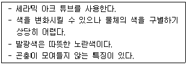
- 백열전구
- 저압형광등
- 고압수은형광등
- 고압나트륨등
(정답률: 70%)
90. 아래 그림과 같이 수준측량을 실시한 결과 a의 표척눈금이 3.560m, a의 표고 Ha =100.00m이고, b의 표고 Hb=101.110m이었다. b점의 표척눈금은? (단, 단위는 m 이다.)
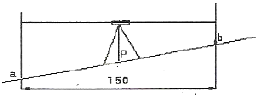
- 1.245m
- 2.450m
- 3.000m
- 3.004m
(정답률: 63%)
91. 콘크리트 다지기에 대한 설명 중 옳지 않은 것은?
- 콘크리트 다지기에는 내부진동기 사용을 원칙으로 한다.
- 진동기는 콘크리트로부터 천천히 빼내어 구멍이 남지 않도록 해아 한다.
- 콘크리트가 한쪽에 치우쳐 있을 때는 내부진동기로 평평하게 이동시켜야 한다.
- 내부진동기는 될 수 있는 대로 연직으로 일정한 간격으로 찔러 넣는다.
(정답률: 63%)
92. 관거(菅渠) 내경(內徑)이 30cm 이하인 맨홀의 최대 설치 간격은?
- 30m
- 50m
- 75m
- 100m
(정답률: 56%)
93. 토사를 파내는 형식으로 깊은 흘파기용, 흙막이의 버팀대가 있어 좁은 곳, 케이슨(caisson) 내의 굴착 등에 적합한 장비는?
- 드래그셔블(drag shovel)
- 클램쉘(clam shell)
- 드래그라인(drag line)
- 앵글도저(angle dozer)
(정답률: 42%)
94. AE 감수제에 대한 설명 중 적절하지 않은 것은?
- 수밀성이 향상되고 투수성이 감소된다.
- 공기연행작용으로 건조수축이 증가된다.
- 응결특성을 변화시키는 지연형, 촉진형과 응결특성에 영향이 없는 표준형으로 분류된다.
- 시멘트 분산작용과 공기연행작용이 합성되어 다누이수량을 크게 감소시킨다.
(정답률: 27%)
95. 그림의 보에서 최대휨모멘트가 생기는 위치는 지점 A로부터 얼마 떨어진 곳인가?
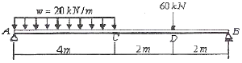
- 2m
- 2.45m
- 3.75m
- 6m
(정답률: 42%)
96. 콘크리트 공사시에 장선받이와 멍에 등의 하중을 받아 지반에 전달하는 거푸집 부재를 무엇이라 하는가?
- 거푸집 널재
- 동바리
- 가새
- 띠장
(정답률: 63%)
97. 부설주차장의 구조 및 설비기준 중 부설주차대수 8대 이하인 자주식주차장에서 차로의 너비는 얼마 이상으로 하는가?
- 1.0m
- 1.5m
- 2.5m
- 4.5m
(정답률: 54%)
98. 수영장의 종단면 중에서 기초지반을 충분히 신뢰할 수 없을 때 안전한 것으로 선택할 수 있는 종단면도는?
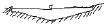
(정답률: 60%)
99. 평판측량의 방법에 대한 설명 중 옳지 않은 것은?
- 방사법은 골목길이 많은 주택지의 세부측량에 적합하다.
- 교회법에서는 미지점까지의 거리관측이 필요하지 않다.
- 현장에서는 방사법, 전진법, 교회법 중 몇 가지를 병용하여 작업하는 것이 능률적이다.
- 전진법은 평판을 옮겨 차례로 전진하면서 최종 측점에 도착하거나 출발점으로 다시 돌아오게 된다.
(정답률: 45%)
100. 등분포하중을 받는 보에서 처짐이 가장 작은 경우의 단면형태는? (단, 길이, 탄성계수 등 모든 조건은 동일하다.)
- 지름이 d인 원형 단면
- 한변이 d인 정사각형단면
- 밑변이 0.5d, 높이가 1.5d인 직사각형 단면
- 밑면이 d, 높이가 0.8d인 삼각형 단면
(정답률: 46%)
6과목: 조경관리론
101. 대추나무 빗자루병에 대한 설명으로 틀린것은?
- 마름무늬매미층에 의해 층매전염 된다.
- 바이러스에 의해 발생하는 수병이다.
- 주요 병징은 황화, 절간생장축소, 엽화현상이다.
- 옥시테트라사이클린 수간주입법에 의해 치료될 수 있다.
(정답률: 48%)
102. 집수구 및 맨홀의 유지관리 착안사항으로 부적합한 것은?
- 태풍철, 해빙기 및 장마기 전에는 청소를 할 필요가 없다.
- 지반이 침하되어 집수구가 솟아올라서 물의 유입이 되지 않을 때에는 주위 지반을 토사로 높이거나 집수구를 절단하여 낮추어 준다.
- 시설 주변의 침하나 포장 덧씌우기 등으로 움푹 들어가 통행에 위험으 f줄 때에는 즉시 조치해야 한다.
- 뚜껑이 분실 또는 파손되었을 경우에는 보수전에 표지판 및 울타리를 치고 즉시 교체 또는 보수해야 한다.
(정답률: 72%)
103. 다음 중 솔나방의 월동태는?
- 나방
- 애벌레(유충)
- 알
- 번데기
(정답률: 54%)
104. 자연공원지역의 관리상황을 파악하기 위한 모니터링 체계를 선정함에 있어 고려할 사항이 아닌 것은?
- 고비용의 모니터링 시스템
- 측정기법의 신뢰성과 민감도
- 측정단위 위치설정의 합리성
- 영향을 측정할 수 있는 지표설정
(정답률: 76%)
1⑤. 소나무 푸사리움가지마름병에 대한 설명으로 옳지 않은 것은?
- 수지가 흐르며, 궤양이 큰 곳은 수지량이 많고 굳어서 흰색으로 보인다.
- 우리나라 적송과 잣나무는 저항성이다.
- 병원체는 불완전균인 Fusarium circinatum이다.
- 우리나라의 경우 마름무늬매미층에 의하여 감염된다.
(정답률: 49%)
106. 꽃이 진 후 바로 전정을 하면 다음 해에 많은 꽃을 볼 수 있는 수종으로만 짝지어진 것은?
- 아카시아나무, 동백나무
- 태산목, 팽나무
- 진달래, 철쭉
- 감나무, 명자나무
(정답률: 68%)
107. 잔디병의 일종인 라지패치에 대한 설명으로 틀린 것은?
- 한국잔디 등의 난지형 잔디에 발생율이 높은 고온성 병이다.
- 원형 도는 동공형 병징이 형성된다.
- 비가 많이 오는 봄, 가을에 거의 발병하고 온도가 15℃ 전후인 저온에 발생이 심하다.
- 북더기 잔디(thatch)의 집적을 유도하여 지면보온을 꾀함으로써 예방할 수 있다.
(정답률: 57%)
108. 중국긴꼬리좀벌, 노랑꼬리좀벌, 상수리좀벌, 큰다리남색종벌 등이 천적인 해충은?
- 밤나무흑벌
- 소나무좀
- 아까시잎촉파리
- 촉백하늘소
(정답률: 50%)
109. 다음 중 솔잎흑파리에 관한 설명으로 틀린것은?
- 유충은 모든 소나무류에 잎집에 쌓인 침엽 기부에 충영을 형성한다.
- 기생성 천적인 흑파리살이먹좀벌, 솔잎흑파리먹좀벌 등으로 방제할 수 있다.
- 5월 하순부터 6월 상순에 걸쳐 우화최성기이다.
- 1년에 1회 발생하며, 유충으로 땅에 월동한다.
(정답률: 25%)
110. 일반적인 조건하에서 조경 시설물(철제 그네)의 도장, 도색은 몇 년 주기로 보수하는가?
- 1년
- 3년
- 5년
- 10년
(정답률: 61%)
111. 아스팔트의 패칭 보수공법의 종류에 속하지 않는 것은?
- 가열혼합식공법
- 상온혼합식공법
- 침투식공법
- 충진식공법
(정답률: 38%)
112. 레크리에이션 관리체계의 3가지 기본요소로만 이루어진 것은?
- 이용자, 만족도, 자원
- 만족도, 자원, 관리
- 자원, 이용자, 관리
- 관리, 이용자, 만족도
(정답률: 64%)
113. 지주목에 관한 설명으로 옳은 것은?
- 이식된 수목은 의무적으로 설치해야 한다.
- 대형목의 설치 기간은 6개월 정도가 이상적이다.
- 태풍이 없는 곳은 설치가 필요없다.
- 수고생장과 근부의 발육을 돕는다.
(정답률: 54%)
114. 공사완료 후 공사의 진척 상황을 그래프로 표시할 대 다음 중 가장 양호한 것은?
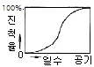
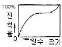
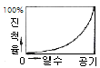
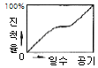
(정답률: 67%)
115. 조경관리업무상 직영방식의 장점이 아닌 것은?
- 관리책임이나 책임소재가 명확하다.
- 긴급한 대응이 가능하다.
- 관리비가 싸게 들고, 장기적으로 안정될 수 있다.
- 관리실태를 정확히 파악할 수 있다.
(정답률: 66%)
116. 잔디밭의 잡초인 클로버 방제의 제초제 및 사용시기로 가장 적합한 것은?
- 메코프로프액제 4~5월
- 글리포세이트액제 4~5월
- 클로티아닌딘액상수화제 4~5월
- 테르라코나졸유제 4~5월
(정답률: 33%)
117. 다음 한해현상(旱害現象)과 관련된 설명 중 잘못된 것은?
- 가뭄이 장기간 계속될 때 토양의 수분부족으로 인해 발생한다.
- 나무의 끝이 말라죽거나 생장이 감소된다.
- 한해가 발생하기 쉬운 입지조건은 산등성이, 볼록한 형태의 급경사지나 남쪽 또는 서쪽 사면의 토양 깊이가 얕은 장소이다.
- 서어나무, 리기다소나무 등은 한해(旱害)에 약하다.
(정답률: 53%)
118. 조경식물의 연간 관리계획을 세우는데 가장 중요시 해야 될 점은?
- 토양조사
- 시비량 점검
- 연간 기후변동
- 이용자들의 요구사항
(정답률: 60%)
119. 소나무좀에 관한 설명으로 틀린 것은?
- 기주는 소나무, 해송, 잣나무 등의 소나무류이다.
- 피해받은 새가지는 구부러지거나 부러진 채 나무에 붙어있는 것이 관찰되는데, 이를 후식(後食) 피해라고 한다.
- 연2회 발생하며, 나무껍질 밑에서 번데기로 월동한다.
- 침입한 구멍이나 탈출한 구멍에는 송진이 하얗게 나와있으며 피해가지는 붉은색으로 말라 죽는다.
(정답률: 62%)
120. 교차보호(cross protection)란 무엇인가?
- 살균제를 이용하여 해충을 방제하는 것
- 살균제와 살충제를 혼용하여 병과 해충을 동시에 방제하는 것
- 동일한 염농집단 내에서 병방제, 해충방제 등으로 업무를 분담하는 것
- 약독계통의 바이러스를 이용하여 강독계통의 바이러스 감염을 예방하는 것
(정답률: 48%)